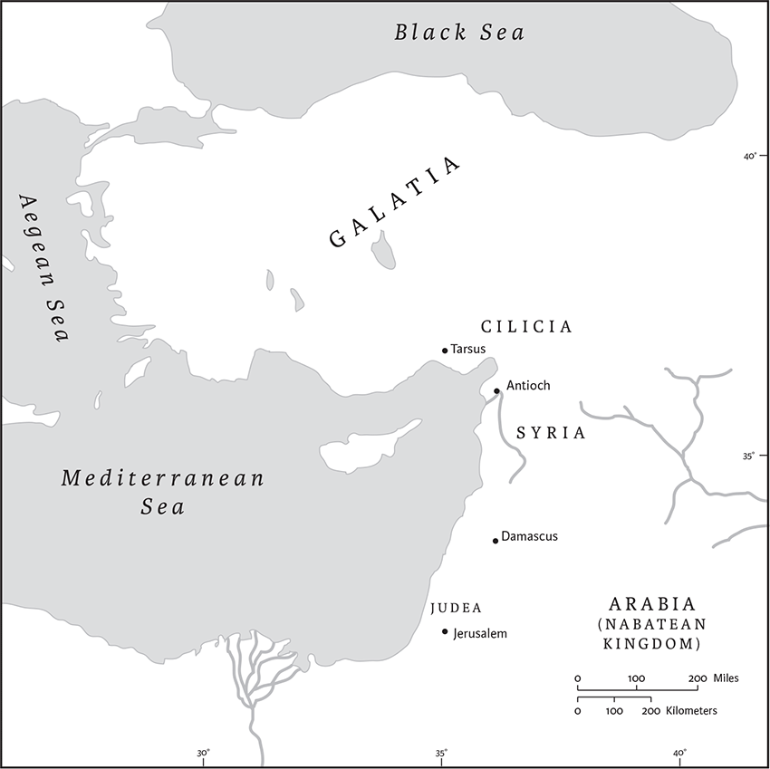

Galatians
Name, Date, and Authorship
The letter is named for its recipients, multiple gatherings or “churches” of Galatia (1.2). Galatia was a region in north-central Asia Minor occupied by an originally Celtic people beginning in the third century bce. Under Roman rule Galatia was the name of a province that stretched farther south to the coast. No date of composition is indicated but the letter was probably written sometime between 50 and 58 ce. Scholars generally agree that Paul was the author. Its content, language, and style resemble sections of his later letter to the Romans.
Historical Context
Galatians paints the picture of a Christ-centered movement within Judaism. Key issues of belief, practice, and authority are subjects of dispute among its leaders. As in his other letters, Paul is a figure on the move, traveling from city to city and engaged with Gentile converts. Chapters 1–2 provide our earliest evidence about the leaders active in the years just after Jesus's death (30/33 ce) and before the catastrophic Judean rebellion against Rome (66–70 ce). Paul makes contentious claims about rivals and competitors, including Peter, those he refers to as “pillars in Jerusalem,” and a more vaguely defined faction that comes in for harsh rebuke. Disputed issues center on what it means to be a Jewish versus a Gentile follower of Christ. Though he represents himself as an iconoclast, Paul's arguments about how Gentiles should relate to traditional Jewish practices echo some strands of Jewish thought about the inclusion of Gentiles in the eschatological people of God.
Contents and Interpretation
The letter adapts standard Greco-Roman letter forms but is unusual in several respects. The opening and closing do not address particular persons, and Paul's tone is clipped and defensive from the outset. The body of the letter is marked by often harsh, antagonistic arguments about rival teachers and teachings. Major issues of dispute center on the place of Gentiles in the Jesus movement.
Galatians opens with a defense of Paul's own authority that includes an account of his own “call” to be an apostle to the Gentiles and of interactions with other leaders. Initial agreements about the gospel message and missionary activity had fallen apart. The core of the letter develops several charged, polemical arguments urging readers to side with Paul amid a flurry of competing claims. Thus, Galatians creates a picture of an embattled Paul, and his Galatian converts as misled by illegitimate teachings and teachers. The target audience is clearly made up of Gentiles, but Paul probably intends it to be overheard by the opposing teachers as well.
The issue of true and false teachings looms large from the outset. Paul portrays his own authority as having a divine rather than human source. Paul recalls his own dramatic reorientation as God called him to cease persecuting the early Jesus movement and to actively promote the gospel of Jesus Christ (1.16). This narrative emphasizes Paul's independence from the leaders in Jerusalem (1.16–17), though he visits them twice. Hints of division occur in their second meeting (2.1–10), followed by a dramatic confrontation with Peter in Antioch (2.14–15), over whether Jewish and Gentile Christ-followers should eat together. This conflict sets the stage for a series of reflections on the status of Gentiles, circumcision, the law, and the “pneuma” (“breath” or “spirit”) of Christ. These arguments are convoluted, but clearly Paul conceives of God's work in Christ as part of an apocalyptic plan for world history. Its culmination will involve the ingathering of at least some Gentiles, peoples who had been alienated from God and who some Jews considered morally depraved. Central to God's plan is an outpouring of the “pneuma” of Christ as the basis for a new way of life, one that ensures the vindication of the Gentile Christ-elect at the impending judgment.
Throughout the letter, Paul alternately rebukes and cajoles his “foolish Galatians” (3.1), but most of his ire is reserved for competing teachers. To explain the special status of Gentiles in God's plan for history, Paul offers arguments about the promises to Abraham, the status of the law, and the life of the “flesh” versus the new life of the “pneuma.” In some cases, the Jewish law is portrayed as a necessary precursor to the fulfillment of the promises to Abraham, which have only recently come to fruition with Christ. These promises are evidence that the Gentile peoples of the world will one day join the true people of God, a day that has dawned in Christ. In other cases, as with the allegory of Sarah and Hagar (4.21–31; see Gen 16; 21.1–21), Paul seems to suggest that the law has become an obstacle to becoming a true heir of Abraham through Christ. In still others, he suggests that the law is being fulfilled in some way by the Gentiles, at least by those who do his bidding (so 5.14; 6.2; Rom 8.1–4). The issue of whether Jewish followers of Christ should continue observing the law is never clearly addressed. But Paul insists that many of the law's provisions are not to be applied to Gentiles (5.2–3), especially circumcision. Paul's tone softens somewhat in chs 5 and 6, which call upon the Galatians to form a harmonious community bound by an ethic of mutuality, solidarity, and concern for others who share the “pneuma” of Christ.
Galatians has often been interpreted as a story of conflict between the new, free, and universal religion of Christianity and the confining, legalistic strictures of an exclusivistic Judaism, but this misrepresents both Judaism and Christianity. Scholars have shown that the characterization of Judaism as legalistic is misleading and that the early Christ-followers are not aptly characterized as belonging to a new religion, namely, Christianity. Careful reading also draws attention to the polemical, one-sided characterizations of persons, alleged factions, and groups in the highly charged rhetoric of this letter. Indeed, the claims about Gentile Christ-followers, assemblies, and rival teachers and teachings are best understood as identifications that Paul hopes to create in the minds of his audience, not straightforward depictions of social-historical realities.
Emma Wasserman
1
Paul an apostle—sent neither by human commission nor from human authorities, but through Jesus Christ and God the Father, who raised him from the dead—2and all the members of God's familya who are with me,
To the churches of Galatia:
3Grace to you and peace from God our Father and the Lord Jesus Christ, 4who gave himself for our sins to set us free from the present evil age, according to the will of our God and Father, 5to whom be the glory forever and ever. Amen.
6I am astonished that you are so quickly deserting the one who called you in the grace of Christ and are turning to a different gospel—7not that there is another gospel, but there are some who are confusing you and want to pervert the gospel of Christ. 8But even if we or an angela from heaven should proclaim to you a gospel contrary to what we proclaimed to you, let that one be accursed! 9As we have said before, so now I repeat, if anyone proclaims to you a gospel contrary to what you received, let that one be accursed!
10Am I now seeking human approval, or God's approval? Or am I trying to please people? If I were still pleasing people, I would not be a servantb of Christ.
11For I want you to know, brothers and sisters,c that the gospel that was proclaimed by me is not of human origin; 12for I did not receive it from a human source, nor was I taught it, but I received it through a revelation of Jesus Christ.
13You have heard, no doubt, of my earlier life in Judaism. I was violently persecuting the church of God and was trying to destroy it. 14I advanced in Judaism beyond many among my people of the same age, for I was far more zealous for the traditions of my ancestors. 15But when God, who had set me apart before I was born and called me through his grace, was pleased 16to reveal his Son to me,d so that I might proclaim him among the Gentiles, I did not confer with any human being, 17nor did I go up to Jerusalem to those who were already apostles before me, but I went away at once into Arabia, and afterwards I returned to Damascus.
18Then after three years I did go up to Jerusalem to visit Cephas and stayed with him fifteen days; 19but I did not see any other apostle except James the Lord's brother. 20In what I am writing to you, before God, I do not lie! 21Then I went into the regions of Syria and Cilicia, 22and I was still unknown by sight to the churches of Judea that are in Christ; 23they only heard it said, “The one who formerly was persecuting us is now proclaiming the faith he once tried to destroy.” 24And they glorified God because of me.
2
Then after fourteen years I went up again to Jerusalem with Barnabas, taking Titus along with me. 2I went up in response to a revelation. Then I laid before them (though only in a private meeting with the acknowledged leaders) the gospel that I proclaim among the Gentiles, in order to make sure that I was not running, or had not run, in vain. 3But even Titus, who was with me, was not compelled to be circumcised, though he was a Greek. 4But because of false believerse secretly brought in, who slipped in to spy on the freedom we have in Christ Jesus, so that they might enslave us—5we did not submit to them even for a moment, so that the truth of the gospel might always remain with you. 6And from those who were supposed to be acknowledged leaders (what they actually were makes no difference to me; God shows no partiality)—those leaders contributed nothing to me. 7On the contrary, when they saw that I had been entrusted with the gospel for the uncircumcised, just as Peter had been entrusted with the gospel for the circumcised 8(for he who worked through Peter making him an apostle to the circumcised also worked through me in sending me to the Gentiles), 9and when James and Cephas and John, who were acknowledged pillars, recognized the grace that had been given to me, they gave to Barnabas and me the right hand of fellowship, agreeing that we should go to the Gentiles and they to the circumcised. 10They asked only one thing, that we remember the poor, which was actually what I wasa eager to do.

Places mentioned in Galatians 1–2
11But when Cephas came to Antioch, I opposed him to his face, because he stood self-condemned; 12for until certain people came from James, he used to eat with the Gentiles. But after they came, he drew back and kept himself separate for fear of the circumcision faction. 13And the other Jews joined him in this hypocrisy, so that even Barnabas was led astray by their hypocrisy. 14But when I saw that they were not acting consistently with the truth of the gospel, I said to Cephas before them all, “If you, though a Jew, live like a Gentile and not like a Jew, how can you compel the Gentiles to live like Jews?”b
15We ourselves are Jews by birth and not Gentile sinners; 16yet we know that a person is justifiedc not by the works of the law but through faith in Jesus Christ.d And we have come to believe in Christ Jesus, so that we might be justified by faith in Christ,e and not by doing the works of the law, because no one will be justified by the works of the law. 17But if, in our effort to be justified in Christ, we ourselves have been found to be sinners, is Christ then a servant of sin? Certainly not! 18But if I build up again the very things that I once tore down, then I demonstrate that I am a transgressor. 19For through the law I died to the law, so that I might live to God. I have been crucified with Christ; 20and it is no longer I who live, but it is Christ who lives in me. And the life I now live in the flesh I live by faith in the Son of God,a who loved me and gave himself for me. 21I do not nullify the grace of God; for if justificationb comes through the law, then Christ died for nothing.
3
You foolish Galatians! Who has bewitched you? It was before your eyes that Jesus Christ was publicly exhibited as crucified! 2The only thing I want to learn from you is this: Did you receive the Spirit by doing the works of the law or by believing what you heard? 3Are you so foolish? Having started with the Spirit, are you now ending with the flesh? 4Did you experience so much for nothing?—if it really was for nothing. 5Well then, does Godc supply you with the Spirit and work miracles among you by your doing the works of the law, or by your believing what you heard?
6Just as Abraham “believed God, and it was reckoned to him as righteousness,” 7so, you see, those who believe are the descendants of Abraham. 8And the scripture, foreseeing that God would justify the Gentiles by faith, declared the gospel beforehand to Abraham, saying, “All the Gentiles shall be blessed in you.” 9For this reason, those who believe are blessed with Abraham who believed.
10For all who rely on the works of the law are under a curse; for it is written, “Cursed is everyone who does not observe and obey all the things written in the book of the law.” 11Now it is evident that no one is justified before God by the law; for “The one who is righteous will live by faith.”d 12But the law does not rest on faith; on the contrary, “Whoever does the works of the lawe will live by them.” 13Christ redeemed us from the curse of the law by becoming a curse for us—for it is written, “Cursed is everyone who hangs on a tree”—14in order that in Christ Jesus the blessing of Abraham might come to the Gentiles, so that we might receive the promise of the Spirit through faith.
15Brothers and sisters,a I give an example from daily life: once a person's willb has been ratified, no one adds to it or annuls it. 16Now the promises were made to Abraham and to his offspring;c it does not say, “And to offsprings,”d as of many; but it says, “And to your offspring,”c that is, to one person, who is Christ. 17My point is this: the law, which came four hundred thirty years later, does not annul a covenant previously ratified by God, so as to nullify the promise. 18For if the inheritance comes from the law, it no longer comes from the promise; but God granted it to Abraham through the promise.
19Why then the law? It was added because of transgressions, until the offspringc would come to whom the promise had been made; and it was ordained through angels by a mediator. 20Now a mediator involves more than one party; but God is one.
21Is the law then opposed to the promises of God? Certainly not! For if a law had been given that could make alive, then righteousness would indeed come through the law. 22But the scripture has imprisoned all things under the power of sin, so that what was promised through faith in Jesus Christe might be given to those who believe.
23Now before faith came, we were imprisoned and guarded under the law until faith would be revealed. 24Therefore the law was our disciplinarian until Christ came, so that we might be justified by faith. 25But now that faith has come, we are no longer subject to a disciplinarian, 26for in Christ Jesus you are all children of God through faith. 27As many of you as were baptized into Christ have clothed yourselves with Christ. 28There is no longer Jew or Greek, there is no longer slave or free, there is no longer male and female; for all of you are one in Christ Jesus. 29And if you belong to Christ, then you are Abraham's offspring,a heirs according to the promise.
4
My point is this: heirs, as long as they are minors, are no better than slaves, though they are the owners of all the property; 2but they remain under guardians and trustees until the date set by the father. 3So with us; while we were minors, we were enslaved to the elemental spiritsb of the world. 4But when the fullness of time had come, God sent his Son, born of a woman, born under the law, 5in order to redeem those who were under the law, so that we might receive adoption as children. 6And because you are children, God has sent the Spirit of his Son into ourc hearts, crying, “Abba!d Father!” 7So you are no longer a slave but a child, and if a child then also an heir, through God.e
8Formerly, when you did not know God, you were enslaved to beings that by nature are not gods. 9Now, however, that you have come to know God, or rather to be known by God, how can you turn back again to the weak and beggarly elemental spirits?f How can you want to be enslaved to them again? 10You are observing special days, and months, and seasons, and years. 11I am afraid that my work for you may have been wasted.
12Friends,g I beg you, become as I am, for I also have become as you are. You have done me no wrong. 13You know that it was because of a physical infirmity that I first announced the gospel to you; 14though my condition put you to the test, you did not scorn or despise me, but welcomed me as an angel of God, as Christ Jesus. 15What has become of the goodwill you felt? For I testify that, had it been possible, you would have torn out your eyes and given them to me. 16Have I now become your enemy by telling you the truth? 17They make much of you, but for no good purpose; they want to exclude you, so that you may make much of them. 18It is good to be made much of for a good purpose at all times, and not only when I am present with you. 19My little children, for whom I am again in the pain of childbirth until Christ is formed in you, 20I wish I were present with you now and could change my tone, for I am perplexed about you.
21Tell me, you who desire to be subject to the law, will you not listen to the law? 22For it is written that Abraham had two sons, one by a slave woman and the other by a free woman. 23One, the child of the slave, was born according to the flesh; the other, the child of the free woman, was born through the promise. 24Now this is an allegory: these women are two covenants. One woman, in fact, is Hagar, from Mount Sinai, bearing children for slavery. 25Now Hagar is Mount Sinai in Arabiaa and corresponds to the present Jerusalem, for she is in slavery with her children. 26But the other woman corresponds to the Jerusalem above; she is free, and she is our mother. 27For it is written,
“Rejoice, you childless one, you who bear no children,
burst into song and shout, you who endure no birth pangs;
for the children of the desolate woman are more numerous
than the children of the one who is married.”
28Now you,b my friends,c are children of the promise, like Isaac. 29But just as at that time the child who was born according to the flesh persecuted the child who was born according to the Spirit, so it is now also. 30But what does the scripture say? “Drive out the slave and her child; for the child of the slave will not share the inheritance with the child of the free woman.” 31So then, friends,c we are children, not of the slave but of the free woman.
5
For freedom Christ has set us free. Stand firm, therefore, and do not submit again to a yoke of slavery.
2Listen! I, Paul, am telling you that if you let yourselves be circumcised, Christ will be of no benefit to you. 3Once again I testify to every man who lets himself be circumcised that he is obliged to obey the entire law. 4You who want to be justified by the law have cut yourselves off from Christ; you have fallen away from grace. 5For through the Spirit, by faith, we eagerly wait for the hope of righteousness. 6For in Christ Jesus neither circumcision nor uncircumcision counts for anything; the only thing that counts is faith workinga through love.
7You were running well; who prevented you from obeying the truth? 8Such persuasion does not come from the one who calls you. 9A little yeast leavens the whole batch of dough. 10I am confident about you in the Lord that you will not think otherwise. But whoever it is that is confusing you will pay the penalty. 11But my friends,b why am I still being persecuted if I am still preaching circumcision? In that case the offense of the cross has been removed. 12I wish those who unsettle you would castrate themselves!
13For you were called to freedom, brothers and sisters;b only do not use your freedom as an opportunity for selfindulgence,c but through love become slaves to one another. 14For the whole law is summed up in a single commandment, “You shall love your neighbor as yourself.” 15If, however, you bite and devour one another, take care that you are not consumed by one another.
16Live by the Spirit, I say, and do not gratify the desires of the flesh. 17For what the flesh desires is opposed to the Spirit, and what the Spirit desires is opposed to the flesh; for these are opposed to each other, to prevent you from doing what you want. 18But if you are led by the Spirit, you are not subject to the law. 19Now the works of the flesh are obvious: fornication, impurity, licentiousness, 20idolatry, sorcery, enmities, strife, jealousy, anger, quarrels, dissensions, factions, 21envy,a drunkenness, carousing, and things like these. I am warning you, as I warned you before: those who do such things will not inherit the kingdom of God.
22By contrast, the fruit of the Spirit is love, joy, peace, patience, kindness, generosity, faithfulness, 23gentleness, and self-control. There is no law against such things. 24And those who belong to Christ Jesus have crucified the flesh with its passions and desires. 25If we live by the Spirit, let us also be guided by the Spirit. 26Let us not become conceited, competing against one another, envying one another.
6
My friends,b if anyone is detected in a transgression, you who have received the Spirit should restore such a one in a spirit of gentleness. Take care that you yourselves are not tempted. 2Bear one another's burdens, and in this way you will fulfillc the law of Christ. 3For if those who are nothing think they are something, they deceive themselves. 4All must test their own work; then that work, rather than their neighbor's work, will become a cause for pride. 5For all must carry their own loads.
6Those who are taught the word must share in all good things with their teacher.
7Do not be deceived; God is not mocked, for you reap whatever you sow. 8If you sow to your own flesh, you will reap corruption from the flesh; but if you sow to the Spirit, you will reap eternal life from the Spirit. 9So let us not grow weary in doing what is right, for we will reap at harvest time, if we do not give up. 10So then, whenever we have an opportunity, let us work for the good of all, and especially for those of the family of faith.
11See what large letters I make when I am writing in my own hand! 12It is those who want to make a good showing in the flesh that try to compel you to be circumcised—only that they may not be persecuted for the cross of Christ. 13Even the circumcised do not themselves obey the law, but they want you to be circumcised so that they may boast about your flesh. 14May I never boast of anything except the cross of our Lord Jesus Christ, by whichd the world has been crucified to me, and I to the world. 15Fora neither circumcision nor uncircumcision is anything; but a new creation is everything! 16As for those who will follow this rule—peace be upon them, and mercy, and upon the Israel of God.
17From now on, let no one make trouble for me; for I carry the marks of Jesus branded on my body.
18May the grace of our Lord Jesus Christ be with your spirit, brothers and sisters.b Amen.